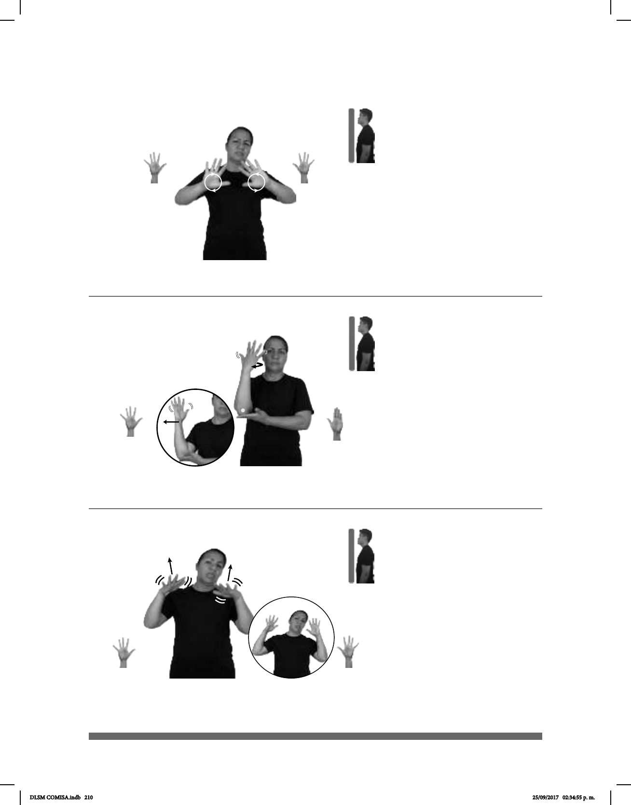

210
Seña: SS
5.1
Palmas hacia afuera.
A la altura del pecho.
Las manos se mueven
formando círculos.
adj. Que no se ve o no se
distingue claramente.
Seña: SB
MD 5.1, MB B-P.2
MD la palma inicia hacia
adentro y termina hacia afuera. MB palma
hacia arriba.
MD a la altura de la
cabeza. MB a la altura del abdomen, del
lado derecho.
El antebrazo de MD gira y
cambia la orientación de la mano, pasa de
mostrar el dorso a mostrar la palma
repetidamente.
1. sust. m. Zona poblada por
gran cantidad de árboles que forman una
cubierta continua. 2. Estación del STC
Metro de la línea 2.
(5-G 52)
(5-G 53) Bosque
1
2
___________neg__
pro-YO VER BIEN pro-YO BORROSO
No veo bien, veo borroso.
HOY BOSQUE
allá
pro-YO IR PASEAR
Hoy voy a ir a pasear al bosque.
Seña: SS
5.1
Palmas oblicuas hacia
abajo y hacia afuera.
Del pecho a la cara.
Recto mientras las manos
tiemblan.
: Ojos
semicerrados, punta de la lengua hacia
afuera
1. v. intr. Emitir o
___muy_
ESA PIEDRA BONITA BRILLO MUCHO
Esa piedra está muy bonita, brilla mucho.
(5-G 54)
1
2
DLSM COMISA.indb 210 25/09/2017 02:34:55 p. m.